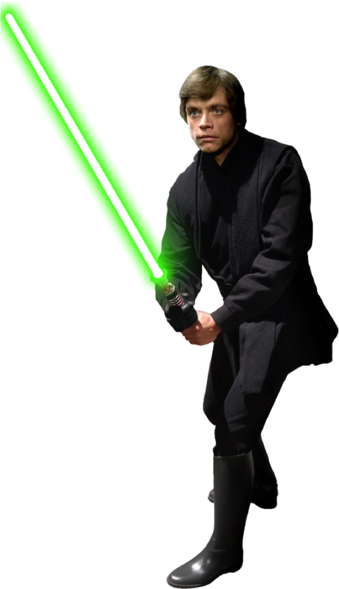
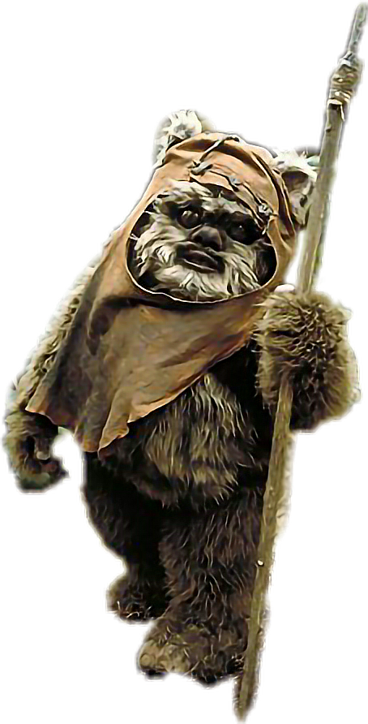
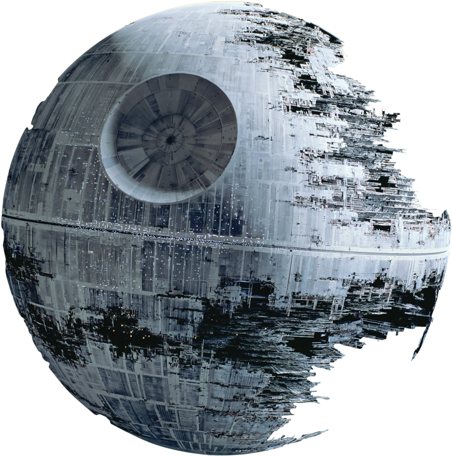

Star Wars: Return of the Jedi
| Star Wars: Return of the Jedi was released on 1983. The film is generally the most criticized of the original trilogy because of its' pacing. |  |
| The Return of the Jedi film originally was supposed to be darker. For example, Han Solo was supposed to be killed off and Luke Skywalker killed and took the place of Vader. |  |
| The Ewoks are one of the most controversial things in Return of the Jedi. They stall the film and are really just there for cute factor. |  |
| Another thing that people dislike about the film is the Death Star II. This is disliked because it copies the original Death Star from A New Hope. |  |